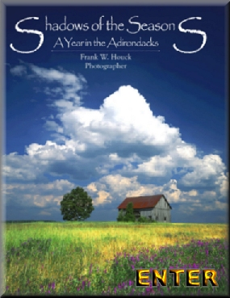
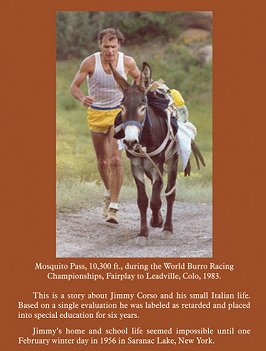

Return to Saranac Lake's past where those gun-toting crime czars, Dutch Schultz and Legs Diamond, sought retribution and famous celebrities mingled with factory workers in pursuit of a magical cure for that dreaded affliction, TB. Glitzy gamblers and kissing cousins drank bathtub booze in local speakeasies where it wasn't wise to comment too loudly about the odd looking "lady" with the hairy legs sitting at the dark table between the two serious looking goons. Saranac Lake was a bustling community where death was accepted and even expected on a daily basis. It came slowly for most and too sudden for a few and the night train never left empty.
But there were also good times in the cure cottages and speakeasies of Saranac Lake and many patients lived to return home and some stayed on to lead full active lives serving the community that healed them. One old timer was quoted as saying, "Before there were discos there were speakeasies and before there was viagra there was TB." (Find out what he meant on page 168 of "REQUIEM".)


Jimmy attended Paul Smith’s Junior College from 1961 to 1963. In 1963, he enrolled at the University of Northern Colorado in Greeley, Colo, and in 1967 he earned a Bachelor’s degree in Biology. He completed his Master’s degree in Science Education in 1972.
In 1967 he married his college sweetheart Karren. Their two children are a son, Darren and a daughter, Kelley. He is also a proud grandfather. His wife, children and grandchildren never knew how hard Jimmy had to fight to attain his goals. Neither did any of his Saranac Lake friends, until now.
"Paisan" taught biology and coached athletics at North Arvada Junior High School, Bear Creek High School, and Arvada High School. In 1997, after 30 years of teaching, he retired from the Jefferson County School District. He was a constant inspiration to his students and many still keep in touch. His wild ties are now a legend in the school system. Today Jimmy lives with his wife Karren in Arvada, Colorado, and enjoys spending time with his grandchildren.
"Paisan" was a track star and basketball player at SLHS and was recently installed into the SLHS SPORTS HALL OF FAME. He no longer races people or burros (not since the accident) but still jogs twenty miles a day. Jimmy also keeps in touch with his Saranac Lake friends and occasionally returns to his hometown for visits.